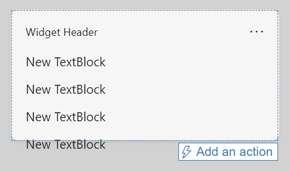
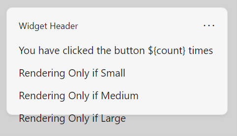
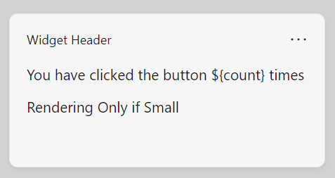
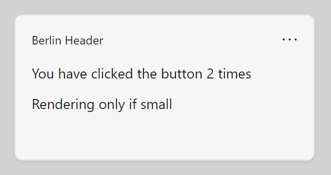
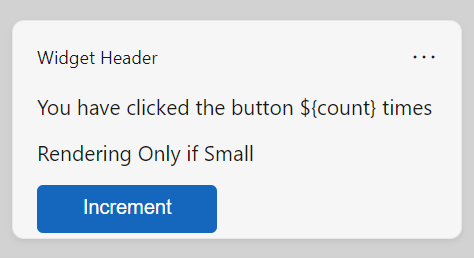

Create a widget template with the Adaptive Cards Designer
Note
Some information relates to pre-released product, which may be substantially modified before it's commercially released. Microsoft makes no warranties, express or implied, with respect to the information provided here.
Important
The feature described in this topic is available in Dev Channel preview builds of Windows starting with build 25217. For information on preview builds of Windows, see Windows 10 Insider Preview.
The UI and interaction for Windows Widgets are implemented using Adaptive Cards. Each widget provides a visual template and, optionally, a data template which are defined using JSON documents that conform to the Adaptive Cards schema. This article walks you through the steps to create a simple widget template.
A counting widget
The example in this article is a simple counting widget that displays an integer value and allows the user to increment the value by clicking on a button in the widget's UI. This example template uses data binding to automatically update the UI based on the data context.
Apps need to implement a widget provider to generate and update the widget template and/or data and pass them to the widget host. The article Implement a widget provider in a win32 app provides step-by-step guidance for implementing the widget provider for the counting widget that we will generate in the steps below.
The Adaptive Cards Designer
The Adaptive Cards Designer is an online interactive tool that makes it easy to generate JSON templates for Adaptive Cards. Using the designer, you can see the rendered visuals and the data binding behavior in real-time as you build your widget template. Follow the link to open the designer, which will be used for all of the steps in this walkthrough.
Create an empty template from a preset
At the top of the page, from the Select host app dropdown, choose Widgets Board. This will set the container size for the Adaptive Card to have a size that is supported for widgets. Note that widgets support small, medium, and large sizes. The size of the default template preset is the correct size for a small widget. Don't worry if the content overflows the borders because we will be replacing it with content designed to fit inside the widget.
There are three text editors at the bottom of the page. The one labeled Card Payload Editor contains the JSON definition of your widget's UI. The editor labeled Sample Data Editor contains JSON that defines an optional data context for your widget. The data context is bound dynamically to the Adaptive Card when the widget is rendered. For more information about data binding in Adaptive Cards, see Adaptive Cards Template Language.
The third text editor is labeled Sample Host Data Editor. Note that this editor may collapse below the page's other two editors. If so, click the + to expand the editor. Widget host apps can specify host properties that you can use in your widget template to dynamically display different content based on the current property values. The Widgets Board supports the following host properties.
| Property | Value | Description |
|---|---|---|
| host.widgetSize | "small", "medium", or "large" | The size of the pinned widget. |
| host.hostTheme | "light" or "dark" | The current theme of the device on which the Widgets Board is displayed. |
| host.isSettingsPayload | true or false | When this value is true, the user has clicked on the Customize widget button in the widget context menu. You can use this property value to display customization settings UI elements. This is an alternative method to using IWidgetProvider2.OnCustomizationRequested to alter the JSON payload in the widget provider app. For more information, see Implementing widget customization. |
| host.isHeaderSupported | true or false | When this value is true, header customization is supported. For more information, see isHeaderSupported. |
| host.isHeader | true or false | When this value is true, the host is requesting a payload specifically for rendering of the widget header. |
| host.isWebSupported | true or false | When this value is false, the host does not currently support loading a widget's web content. When this occurs, web widgets will display the fallback JSON payload supplied by the widget provider, but this value can be use to further customize the content. For more information, see Web widget providers |
| host.isUserContextAuthenticated | true or false | When this value is false, the only action that is supported is Action.OpenUrl. The value of isUserContextAuthenticated can be used to adjust widget content appropriately, given the interactivity limitations. |
The Container size and Theme dropdowns next to the Select host app dropdown at the top of the page allow you to set these properties without manually editing the sample host JSON in the editor.
Create a new card
In the upper left corner of the page, click New card. In the Create dialog, select Blank Card. You should now see an empty Adaptive Card. You will also notice that the JSON document in the sample data editor is empty.
The counting widget that we will create is very simple, only consisting of 4 TextBlock elements and one action of type Action.Execute, that defines the widget's button.
Add TextBlock elements
Add four TextBlock elements by dragging them from the Card elements pane on the left of the page onto the blank adaptive card in the preview pane. At this point, the widget preview should look like the following image. The content again overflows outside of the widget borders, but this will be fixed in the following steps.

Implementing conditional layout
The Card Payload Editor has been updated to reflect the TextBlock elements that we added. Replace the JSON string for the body object with the following:
"body": [
{
"type": "TextBlock",
"text": "You have clicked the button ${count} times"
},
{
"type": "TextBlock",
"text": "Rendering only if medium",
"$when": "${$host.widgetSize==\"medium\"}"
},
{
"type": "TextBlock",
"text": "Rendering only if small",
"$when": "${$host.widgetSize==\"small\"}"
},
{
"type": "TextBlock",
"text": "Rendering only if large",
"$when": "${$host.widgetSize==\"large\"}"
}
]
In the Adaptive Cards Template Language, the $when property specifies that the containing element is displayed when the associated value evaluates to true. If the value evaluates to false, the containing element is not displayed. In the body element in our example, one of the three TextBlock elements will be shown, and the other two hidden, depending on the value of the $host.widgetSize property. For more information about the conditionals supported in Adaptive Cards, see Conditional layout with $when.
Now the preview should look like the following image:

Note that the conditional statements aren't being reflected in the preview. This is because the designer isn't simulating the behavior of the widget host. Click the Preview mode button at the top of the page to start the simulation. The widget preview now looks like the following image:

From the Container size dropdown, select "Medium" and note that the preview switches to only show the TextBlock for the medium size. The container in the preview also changes size, demonstrating how you can use the preview to make sure that your UI fits within the widget container for each supported size.
Bind to the data context
Our example widget will use a custom state property named "count". You can see in the current template that the value for the first TextBlock includes the variable reference $count. When the widget is running in the Widgets Board, the widget provider is responsible for assembling the data payload and passing it to the widget host. At design time, you can use the Sample Data Editor to prototype your data payload and see how different values impact the display of your widget. Replace the empty data payload with the following JSON.
{"count": "2"}
Note that the preview now inserts the value specified for the count property into the text for the first TextBlock.

Add a button
The next step is to add a button to our widget. In the widget host, when the user clicks the button, the host will make a request to the widget provider. For this example, the widget provider will increment the count value and return an updated data payload. Because this operation requires a widget provider, you won't be able to view this behavior in the Adaptive Cards Designer, but you can still use the designer to adjust the layout of your button within your UI.
With Adaptive Cards, interactive elements are defined with action elements. Add the following block of JSON directly after the body element in the card payload editor. Be sure to add a comma after the closing bracket (]) of the body element or the designer will report a formatting error.
,
"actions": [
{
"type": "Action.Execute",
"title": "Increment",
"verb": "inc"
}
]
In this JSON string, type property specifies the type of action that is being represented. Widgets only support the "Action.Execute" action type. The title contains the text that is displayed on the button for the action. The verb property is an app-defined string that the widget host will send to the widget provider to communicate the intent associated with the action. A widget can have multiple actions, and the widget provider code will check the value of the verb in the request to determine what action to take.

The complete widget template
The following code listing shows the final version of the JSON payload.
{
"type": "AdaptiveCard",
"$schema": "http://adaptivecards.io/schemas/adaptive-card.json",
"version": "1.6",
"body": [
{
"type": "TextBlock",
"text": "You have clicked the button ${count} times"
},
{
"type": "TextBlock",
"text": "Rendering Only if Small",
"$when": "${$host.widgetSize==\"small\"}"
},
{
"type": "TextBlock",
"text": "Rendering Only if Medium",
"$when": "${$host.widgetSize==\"medium\"}"
},
{
"type": "TextBlock",
"text": "Rendering Only if Large",
"$when": "${$host.widgetSize==\"large\"}"
}
],
"actions": [
{
"type": "Action.Execute",
"title": "Increment",
"verb": "inc"
}
]
}
Settings payload example
The following code listing shows a simple example of a JSON payload that uses the host.isSettingsPayload property to display different content when the user has clicked the Customize widget button.
{
"type": "AdaptiveCard",
"body": [
{
"type": "Container",
"items":[
{
"type": "TextBlock",
"text": "Content payload",
"$when": "${!$host.isSettingsPayload}"
}
]
},
{
"type": "Container",
"items":[
{
"type": "TextBlock",
"text": "Settings payload",
"$when": "${$host.isSettingsPayload}"
}
]
}
],
"actions": [
{
"type": "Action.Submit",
"title": "Increment",
"verb": "inc",
"$when": "${!$host.isSettingsPayload}"
},
{
"type": "Action.Submit",
"title": "Update Setting",
"verb": "setting",
"$when": "${$host.isSettingsPayload}"
}
],
"$schema": "http://adaptivecards.io/schemas/adaptive-card.json",
"version": "1.6"
}